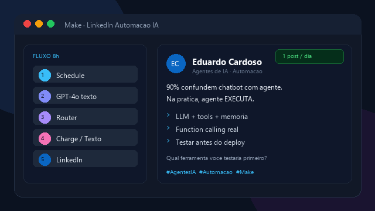
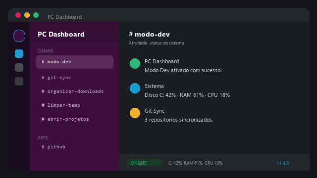

Pacote 01
Leads organizados
Formulário, Instagram ou WhatsApp → Google Sheets + aviso em tempo real.
- Captura e registro automático
- Alerta no WhatsApp ou e-mail
- Planilha pronta para follow-up
Olá, eu sou
Automações com n8n, Make e IA
Destaque:
Organizo leads, conteúdo e relatórios para empresas não perderem tempo com trabalho manual. Setup claro, prazo curto e manutenção opcional — do briefing ao fluxo rodando.

status.json
Sou de Chapecó, SC. Passei por logística, suporte e laboratório — sei o que é retrabalho manual. Agora monto automações com n8n, Make e IA que cabem no dia a dia da operação.
Como ajudo
Transformo tarefas repetitivas em fluxos: captura de leads, posts com IA, avisos no WhatsApp e relatórios que chegam sozinhos — com prazo e escopo fechados.
Estudo em andamento
Pós Tech em Agentes de IA (FIAP + Alura): LLMs, RAG e orquestração. No freela, priorizo o que gera resultado rápido: integrações, prompts e automações estáveis.
Pacotes com escopo fechado para você contratar na segunda e ter fluxo rodando na mesma semana (ou pouco depois).
Pacote 01
Formulário, Instagram ou WhatsApp → Google Sheets + aviso em tempo real.
Pacote 02 · Mais pedido
Calendário + posts com IA (texto e/ou imagem) publicados no horário — no estilo do meu case LinkedIn.
Pacote 03
Planilha ou sistema → resumo diário/semanal no e-mail ou WhatsApp, sem abrir planilha toda hora.
Manutenção opcional: R$ 100–250/mês (ajustes, monitoramento e pequenas melhorias). Valores “a partir de” — o orçamento final depende das integrações.
Prova do que entrego: problema, solução e resultado. Contrate uma versão disso para o seu negócio.

Case principalProblema: postar com consistência consome tempo todos os dias.
n8n · OpenAI · LinkedIn · VPS
Problema: lead chega no Instagram/WhatsApp e some no meio do dia.
n8n · Google Sheets · WhatsApp · Webhooks

Painel desktop para Windows com automações de um clique, bandeja e remoção de programas.
Tauri 2 · React · TypeScript · Rust

Ferramentas que uso para entregar freela — e o que estou aprofundando na pós.
FIAP + Alura — 360h · 10 meses
Jun, 2026 — Em andamento
LLMs, RAG, orquestração, APIs e governança. Certificado ao concluir, com micro-certificações por fase.
Ver curso na FIAPUniversidade Cruzeiro do Sul
2022
Universidade de Franca (UNIFRAN)
2016 — 2020
Libratek Balanças e Serviços
2014
Senai — Santo Antônio da Platina
2010 — 2012
Operação real antes da automação: processos, cliente e prazo — o que hoje vira fluxo no n8n/Make.
Fluxo Metrologia
Jul, 2025 — Presente
Calibração, certificados e conformidade documental — rotinas que exigem precisão e rastreabilidade.
Sandimas — Chapecó, SC
Mai, 2023 — Fev, 2025
Expedição, documentos fiscais e conferência de cargas — convivência diária com retrabalho e prazos apertados.
Crescer Sistemas — Chapecó, SC
Fev, 2022 — Mai, 2023
Atendimento a clientes e resolução de problemas — escuta da dor antes de propor solução.